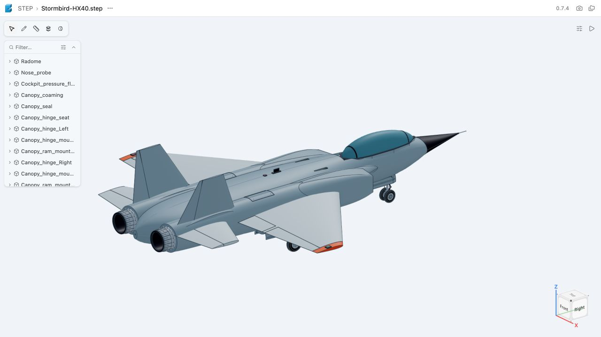

1 October 2026 · Principles of Making Planes · Design manifest
The handbook has requirements beyond a believable exterior. This pass fixes concrete CAD/game mismatches and records what is still missing. No flight tests or runtime aircraft tests were run.
| Overall mesh length / nominal body length | 17.589 m / 17.2 m |
|---|---|
| Span / ground-datum height | 13.4 m / 4.506 m |
| Main wing reference area | 55.361 m², under the stated centerline convention |
| Main tire track / wheelbase | 3.970 m / 6.500 m |
| Gear / canopy travel | 4.8 s / 3.2 s; canopy opens 55° |
| Mass / physical CG / inertia | Not established |
| Aerodynamic coefficients / thrust map | Not established |
As the nose rises, the aft underside drops toward the ground. Oleo compression lowers the fuselage further. The limiting angle must therefore be calculated with the suspension compressed, using the aircraft’s actual tire and underside geometry.
| Oleo compression | Aft underside contact | Wingtip contact in level-pitch bank |
|---|---|---|
| 0 mm | 11.81° | 22.91° |
| 80 mm | 11.09° | 22.07° |
| 160 mm | 10.35° | 21.22° |
The ground pitch limit is 10.3545° − 1° = 9.3545°. These are rigid geometry results on a flat plane with neutral controls and the canopy closed. They exclude tire deflection, bumps and structural flex; the one-degree margin is a design choice, not a validated operating limit.
| Handbook requirement | Status | Evidence and remaining work |
|---|---|---|
| Mission and sizing (§2–3) | Incomplete | Role is stated. Weight, payload, runway length, range and physical performance targets have not been sized. |
| Units and export frames (§4) | Matched | CAD mm and game m are explicit. Mesh mapping is [X,Z,−Y], scale 1. The −2 m body translation is a render datum, not a CG. |
| Wing geometry (§5) | Measured | 13.4 m span; 47.275 m² exposed main wing; 55.361 m² reference area; aspect ratio 3.243; mean aerodynamic chord 4.701 m. Reference includes a constant-root centerline strip and excludes overlapping root fairings. |
| Airfoils and stall progression (§6) | Unverified | Custom 9% thick wing section with 0.4% sinusoidal camber. No polars, Reynolds/Mach study, stall progression or lift-capacity sizing. |
| Drag and efficiency (§7) | Approximation | Gear drag now follows actual extension. Its coefficient remains an arcade tuning constant. No parasite/induced/transonic drag budget. |
| Mass, CG and inertia (§8) | Incomplete | No component mass budget, fuel/loading cases, physical CG, neutral point or inertia tensor. These fields are explicitly unset in the design manifest. |
| Stability and trim (§9) | Unverified | Tail geometry and pivot axes exist. No static margin, trim, tail volume, damping, control effectiveness or augmentation analysis. |
| Controls (§10) | Partial | Exporter retains hinge datums including canted rudder axes. Runtime uses those axes. Whole swept-surface clearance and aerodynamic authority remain unverified. |
| Propulsion installation (§11) | Partial | Continuous duct geometry, compressor/nozzle parts and reserved engine cores. Gear wells clear the reserved cases in sampled CAD poses. No inlet pressure recovery, shaft dynamics, thrust/fuel map or installation-load analysis. |
| Landing gear (§12) | Geometry checked | Four CAD tires: twin 550 mm nose tires, single 740 mm mains. Main trunnions are at ±1.80 m; tires at ±1.985 m. 12 mounts embed in the fuselage. CG support, braking/tip-over loads and tire deflection still need analysis. |
| Structure and cockpit (§13) | Partial | Prior inspection verified 84 mounted seat parts and headrest/glazing clearances. Pilot camera moved to a declared provisional seated eye point. No occupant reach/egress model, structural stress, buckling or fatigue substantiation. |
| Performance envelope (§14) | Unverified | Static ground geometry is measured. Thrust-to-weight, climb, turning limits, stall speed, range, flutter and service ceiling have not been established. |
| Weather (§15) | Approximation | Existing game wind/gust assist retained; no density variation, turbulence specification, crosswind envelope or weather analysis. |
| Modeling and animation (§16) | Source corrected | The same extension and steering state drives articulated tire contacts and rendered mechanisms. Oleo travel uses a shared phase schedule. Tire spin uses rolling distance / measured radius. Missing CAD hinge datums now fail export. |
| Simulation scope (§17) | Declared | Assisted arcade model retained. No six-degree-of-freedom mass/inertia or aerodynamic derivative model is claimed. Suspension position for Stormbird is handled in its physical pose, without a second render offset. |
| Repeatable workflow (§18) | Available | CAD build regenerates the runtime geometry manifest. Static geometry audit and build scripts are maintained with the aircraft sources and requirements. |
| Acceptance and flight matrix (§19) | Not complete | Static artifact evidence and compilation are available. Runtime gear behavior, handling, takeoff, landing and performance testing were not run, following the user’s restriction. |
| Evidence rules (§1,20–23) | Applied | Game tuning is separated from physical design data. Null values identify missing analysis. CAD topology, mounting and screenshots do not establish flyability. |
Prior native CAD checks recorded 503 valid positive-volume solids, 15 sampled gear poses, 60 door component poses and 12 fuselage gear mounts. This pass reconfirmed the same saved CAD document hash and game GLB hash, then matched all four exported tire pivots. The prior checks were not rerun because the geometry did not change.
Audit evidence · Ground geometry measurements · STEP master
Production TypeScript/Vite compilation passed. A pre-existing bundle-size warning remains. Flight, browser gameplay, dynamic mechanisms and performance remain unverified.
Commands: bun run stormbird:build regenerates CAD, transfer, shared contacts and game export; bun run stormbird:audit derives static geometry and checks exported datums; bun run build compiles the game. The static audit does not start a simulator.
The refreshed viewer opens with the whole aircraft visible. This image is a static CAD view.

The aircraft work is committed and published in the private Pocket Flight repository. Aircraft commit b87fb13 was verified against GitHub’s main branch. The local origin remote tracks this repository. Unrelated working-directory changes are retained locally.